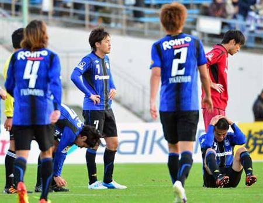

ガンバ大阪が残留する確率を計算してみた。
公開日：

Ｇ大阪16位で残り１戦…初降格危機／Ｊ１ - 最新ニュース｜MSN トピックス
前田がシーズン最初に得点したチーム
2007年 甲府 → Ｊ2降格
2008年 東京Ｖ→ Ｊ2降格
2009年 千葉 → Ｊ2降格
2010年 京都 → Ｊ2降格
2011年 山形 → Ｊ2降格
2012年 ガンバ大阪 → 崖っぷち
前田マジ怖い
で、最終節が前田遼一擁するジュビロ磐田。嫌なことはあまり想像したくないが、ここまでくると因縁めいたものを感じる。なんで監督変えたんや……。
| 順位 | チーム | 勝ち点 | 得失点差 | 最終節の相手 | |
| 14 | セレッソ大阪 | 41 | -6 | H | 川崎F（8位） |
| 15 | ヴィッセル神戸 | 39 | -8 | H | 広島（1位) |
| 16 | ガンバ大阪 | 38 | +3 | A | ジュビロ磐田（12位） |
| 17 | アルビレックス新潟 | 37 | -8 | H | 札幌（18位） |
| 18 | コンサドーレ札幌 | 14 | -60 | A | 新潟（17位） |
※16位以下が J2 降格
さてはて、そのガンバ大阪ですけれど、前節は残念ながら勝ちきれず引き分け。勝っていればスゴい楽になっていたのに！ あと順位ひとつがとおいぜぇ……。
というわけで、最終節で J1 残留を決める条件はというと――
負けた場合（勝ち点38）
J2 よ、こんにちは！
引き分けた場合（勝ち点39）
- 神戸の敗北（勝ち点39）――①
- 新潟の引き分け以下（勝ち点38）――②
が J1 残留の条件。この二つの条件を同時に満たす必要がある。
神戸の相手は広島（優勝おめでとう！）なので、敗北が濃厚。というわけで、① はかなりの確率で期待していい。
ただ、ホームだから引き分けになるのも十分あり得るし、火事場のクソ力で勝ってしまう確率もないわけではない。あぁ、優勝争いが最終節までもつれこんでほしかった！
新潟はホームで札幌と対戦。ぶっちゃけ、新潟の勝利が濃厚（ごめんなさい！）なので、② はあまり期待できなさそう。
ぜひコンサドーレには意地を見せていただきたいところ。お前ら負け過ぎなんだから最終節ぐらい勝ち点ゲットしろ（←オマエモナー
勝った場合（勝ち点41）
- 神戸の引き分け（勝ち点40）以下
- C大阪の敗北（勝ち点41）――③
が J1 残留の条件。この二つの条件のどちらか一つを満たす必要がある。得失点差でほかより優位なのが救いだなぁ。
神戸の話はさっきしたので、今度は ③ のセレッソが負ける場合だけど……これはありうるな！ ただ、クルピ監督になってから調子は悪くないので、それほど期待はできない。しかもホームゲームというのも結構大きい。神戸に期待したほうがよさげ。
で、肝心のガンバだけど。
磐田が 残留が決まって腑抜けに 調子を落としているから勝てそうでもあるけど、アウェイだし、前田がいるし、正直よくわからん。火事場のクソ力を計算に入れたとしてもほぼ実力は伯仲とみなして、勝ち・引き分け・負けが 1/3 ずつぐらいあると考えるべき。
――とすると、仮りに以下のように勝敗確率を評価するとして、
| 勝ち | 引き分け | 負け | |
| C大阪 | 50％ | 25％ | 25％ |
| 神戸 | 25％ | 25％ | 50％ |
| 新潟 | 50％ | 30％ | 20％ |
となって、ガンバ大阪の残留する確率は約 35.41 ％になる。これはやべー ＼(＾o＾)／
追記
ついでなのでほかのチームの確率も計算してみる。あと、C大阪の勝敗予想はちょっとC大阪寄りかなという気がしてきたので、勝ち・引き分け・負けを1/3で評価しなおしてみた。
| 勝ち | 引き分け | 負け | |
| C大阪 | 33％ | 33％ | 33％ |
| 神戸 | 25％ | 25％ | 50％ |
| G大阪 | 33％ | 33％ | 33％ |
| 新潟 | 50％ | 30％ | 20％ |
この場合の計算結果は
- C大阪: 97.22％
- 神戸: 41.66％
- G大阪: 36.11％
- 新潟: 25％
C大阪はほぼ勝ち抜けが決まっている。神戸は負けても 1/6 の確率で首の皮一枚残る。引き分ければ 1/3 の確率に倍増。ガンバは勝てば 5/6 の確率で残れる。新潟の残留確率は（札幌への勝率）×50％なので、仮に札幌に対して80％で勝てるとすれば残留確率は40％。新潟は今回算出した数字ほど絶望的ではないのかもしれない。